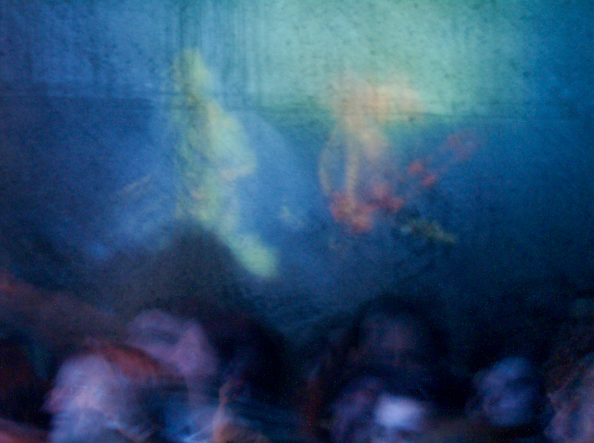
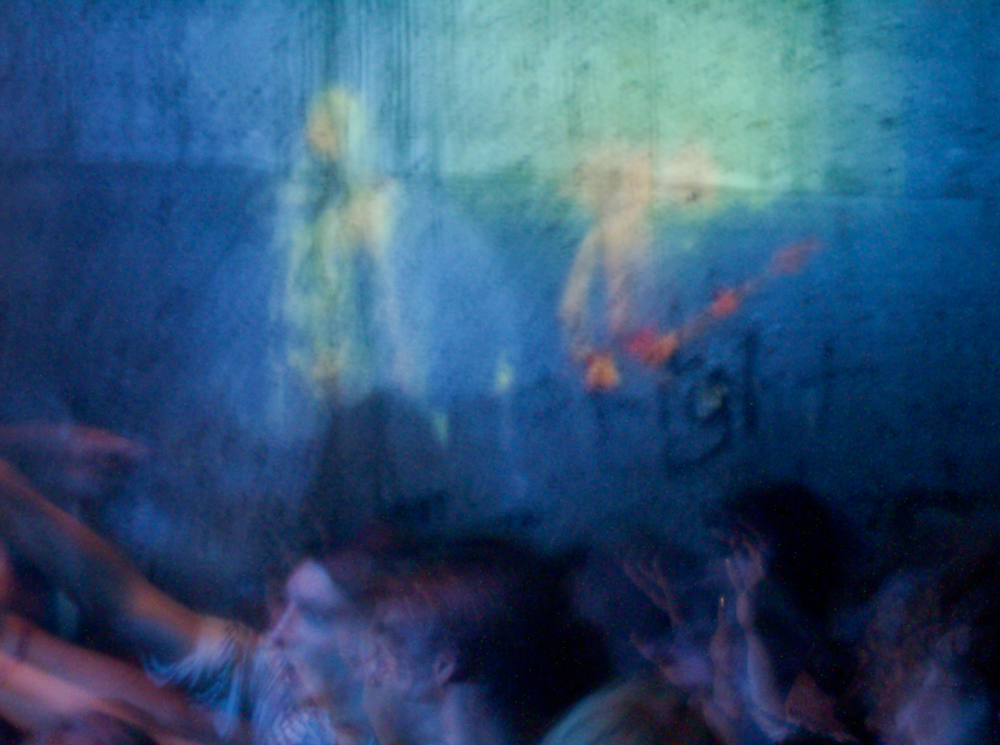
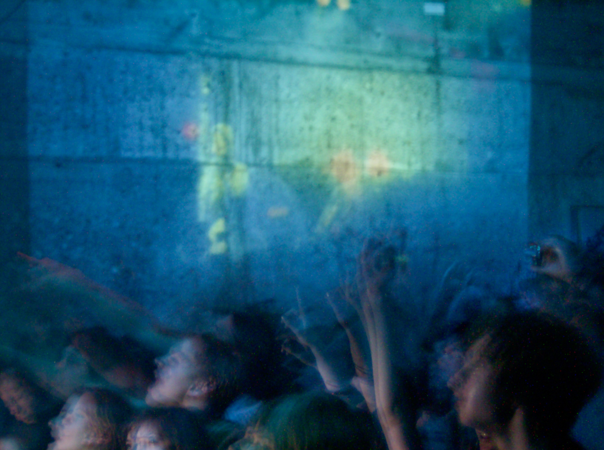
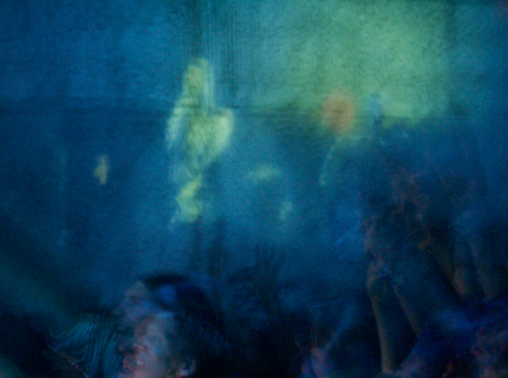
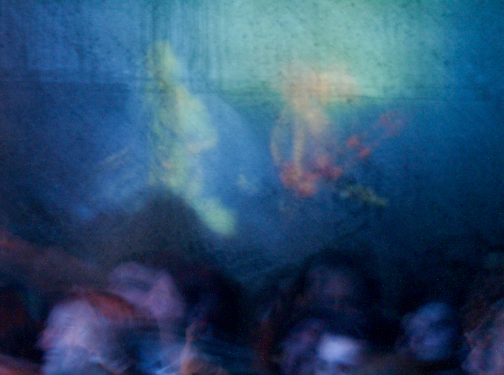
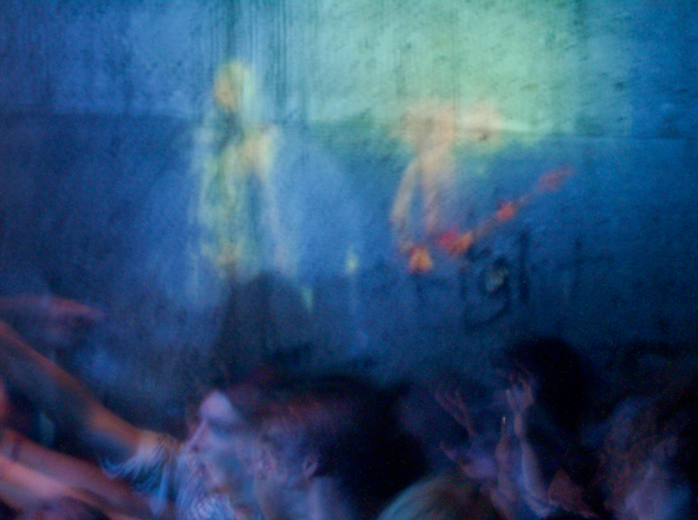
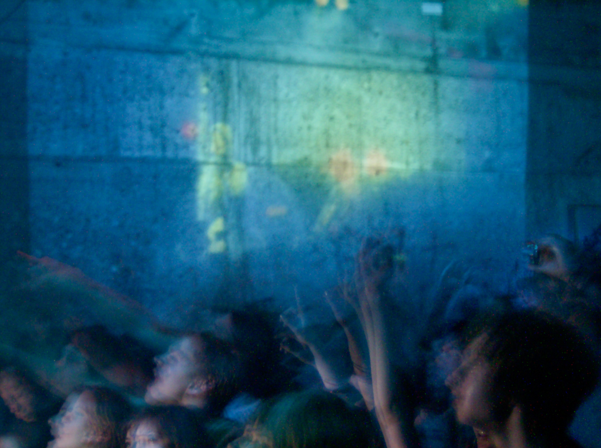
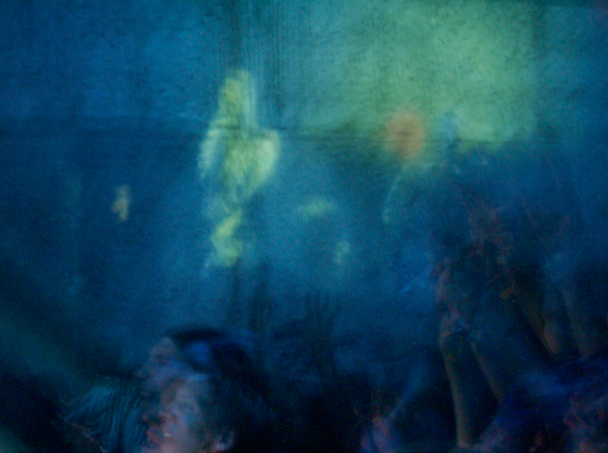

X
Gefällt mir
Musik
Mein Soundtrack für das Digitalzeitalter ist "OK Computer" von Radiohead.
Podcasts
Als Info-Junkie höre ich diese Podcasts: Trailblazers by Walter Isaacson, Babbage from The Economist, People fixing the World, How to Save a Planet, The Secret History of the Future;
Miniserien
Binge-Watching. Ja. Am liebsten Minisierien: Tschernobyl, Top of the Lake, Little Fires Everywhere, Very Sharp Things, Motherhacker (Hörspiel);
Bücher
Derzeit: "Der Trost runder Dinge" von Clemens J. Setz und "Homo Deus" von Yuval Noah Harari. Zuletzt gelesen und weiterempfehlen kann ich "Anleitung zum Unglücklichsein" von Paul Watzlawick und "Das Palais muss brennen" von Mercedes Spannagel.
X
Mache ich
Kommunikation
Strategische Kommunikation, Kampagnen, Presse- und Medienarbeit, Krisenkommunikation;
Schreiben
Mama hat immer gesagt: "Erst denken, dann sprechen." Ich finde das gilt auch für das Schreiben. Ohne interessante Gedanken oder Betrachtungen, kann man sich jede Formulierungskunst schenken.
Sprechen
80% Auftreten, 15% Ausdruck und 5% Inhalt. An diese Formel erinnere ich mich vor jedem öffentlichen Auftritt: als Pressesprecher, Vortragender und Moderator.
Projektmanagement
Prince 2 Foundation, PROUD, PMA (Projektmanagement Austria), Scrum;
Frontend Development
HTML 5, CSS 3;
Software
MS Office, Adobe CC (Ps, Il, Id, Sp, Lr, Au, Pr), diverse IDE;
X
Textarbeit
Es ist ganz einfach einen guten Text zu schreiben. Du musst dein Publikum nur dazu bringen den ersten Satz zu lesen und dann den zweiten und den dritten und so weiter bis zum Ende des Textes. So ähnlich, aber treffend hat es John Curran formuliert.
Beginnen wir aber mit etwas ganz anderem: dem Schriftbild.
-
Verwende eine lesbare Schrift (keinesfalls Joker, Papyrus, Comic Sans).
-
Wähle die richtige Schriftgrösse (Print: 10-14pt; Web: 15-25pt).
-
Eine Zeile sollte die Länge von 2-3 Alphabeten in Kleinbuchstaben haben.
-
Der Zeilenabstand sollte zw. 1,2 bis 1,5 sein.
Nach dem ersten Eindruck, dem Schriftbild, kommt die Headline. Für sie gilt, was für jeden anderen Satz gilt: Die Leser*innen sollen weiterlesen. Headlines müssen heute aber noch mehr können. Sie müssen auch als Klick-Bringer auf Social Media herhalten.
Diese Worte kommen laut einer Studie im englischen Sprachraum in den meisten viralen Headlines vor:
-
Du und Dich (You and Your)
-
Diese
-
Was, Welche, Wann (What, Which, When)
-
Warum (Why)
-
Mensch, Menschen (People)
-
Video
-
Die reichsten, die schnellsten, die schönsten (the most)
-
So (How to)
Beispiele sind:
-
Was würdest du mit 1 Million Euro tun?
-
Diese Werbung macht dich sprachlos
-
Warum sich Fake News schneller verbreiten [Video]
-
Das sind die reichsten Menschen der Welt
-
So verlierst du 10 Kilos in einer Woche
Zwar ist diese Liste aus einer US-Studie übersetzt, jedoch funktionieren sowohl Worte als auch Formulierungen ebenso auf Deutsch.
Damit deine Headline aber nicht nach Clickbaiting klingt und damit viele viele Userinnen und User abschreckt, solltest du die Beispiele nicht kopieren, sondern dich davon nur inspirieren lassen. Die Mechanik funktioniert. Wichtig ist aber auch, dass du
-
aktuelle Ereignisse berücksichtigst
-
Neugier weckst
-
Emotionen ansprichst
-
zum Handeln aufforderst
-
mutig formulierst
-
wie ein Mensch klingst und nicht wie ein Roboter.
X
Impressum
Christoph Mandl
Vally-Weigl-Gasse 5/4/451
A-1100 Wien
.jpg)
 






